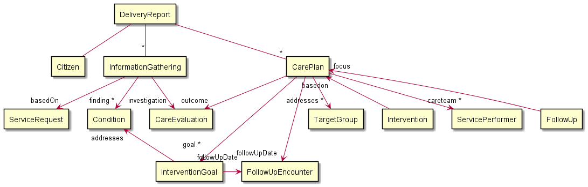

Implementation Guide for FFB reporting (FFB uddatasæt)
1.0.0 - release

Implementation Guide for FFB reporting (FFB uddatasæt)
1.0.0 - release

This page is part of the KLFFBReporting (v1.0.0: Release) based on FHIR R4. This is the current published version. For a full list of available versions, see the Directory of published versions 
| Official URL: http://fhir.kl.dk/ffbreporting/ImplementationGuide/kl.dk.fhir.ffbreporting | Version: 1.0.0 | |||
| Active as of 2023-08-27 | Computable Name: KLFFBReporting | |||
This implementation guide describes the delivery of social data from the vendor specific solutions to a common gateway. The reporting aims for compliance with the Danish core profiles and the current work on the shared information model (FKI) for data in the Danish municipalities.
The profiles for the reporting are restricted to allow only the information that is required to report to the gateway. This will not be compliant with the shared information model for data in the Danish municipalities and FFB (Fælles Faglige begreber) as it describes a subset where not all mandatory data is allowed.
The data contained in the reporting is a subset of the data defined in the Danish standard for social care (FFB), with focus on structured information about conditions and care plans where all free text information is omitted. Furthermore, the reporting is based on the method given by VUM (Voksenudredningsmetoden).

Note: All resources refer to citizen in the bundle (some relations are omitted from the diagram to make it readable).
The reporting contains the following types of information. The validation section for each type describes the validations enforced by the profile. See the specific profile for a formal specification of the constraints.
In general all referenced ressources must be included in the report.
Information about the citizen that is the subject of the report. The main information about the citizen is the civil registration number (CPR-nr) and identification of the municipality holding and reporting the data.
Free text information about the citizen is not part of this reporting.
Information about the request that initiated an information gathering about the citizens situation. The main information about the request is the municipality case number (sagsnummer).
Information about a given information gathering (udredning). The main information about the information gathering is the time of the event and a collection of the findings.
A new information gathering is reported as a new InformationGathering resource with a new id. It must be new if a information gathering has been performed. This will always be the case if the granted interventions (ydelser), target groups (målgrupper), or service provider (tilbudstype) has changed. (Note This is not validated by the profile)
Free text information about the information gathering is not part of this reporting.
Information about the conditions (FFB temaer) of the citizen as assessed by the social care practitioners. A condition represents an assessement of that condition, and it must contain condition code as defined by FFB, and the time that it was recorded. Conditions under “Aktivitet og deltagelse” must also contain the severity of the condition represented as the functioning level as defined by FFB. Other conditions must not contain severity.
All information about conditions that has changed since the last reporting must be contained in a new report. Changes in the assessment may include conditions that are new, updated by a new assessment or no longer in relevant. A condition that has changed since previously reported shall have the same code according to FFB and is considered to be an update to the assessment in which case the last asserted date must be set to the date of the update.
Free text information about the conditions is not part of this reporting.
Information about the intervention goal for a primary condition and secondary conditions under “Aktivitet og deltagelse. The intervention goal must contain the expected severity as defined by FFB.
All changes to the goals since the last reporting must be included in a new report, including the referenced conditions and all the resources referenced by the conditions.
Free text information about the goals is not part of this reporting.
Information about a care plan for the citizen. The care plan (indsats) defines the intervention goals (forventet funktionsevne), the care plan evaluation (støttebehov), the target groups (målgrupper), the interventions (ydelser), the service performers (tilbudstyper), the follow-up date (opfølgningsdato), and the follow-up result (opfølgningsresultat).
All information about care plans that has changed since the last reporting must be contained in a new report. Changes in the care plan caused by a new information gathering must be reproted as a new care plan (with a new id).
Free text information about care plans is not part of this reporting.
Information about the encounters referenced from a care plan or an intervention goal to hold the follow-up dates. The encounter must contain the expected start date of the next follow-up.
Free text information about follow-up encounters is not part of this reporting.
Evaluation of the amount of support the citizen need (støttebehov).
All changes to the care plan evalueation since the last reporting must be contained in a new report.
Free text information about care plan evaluations is not part of this reporting.
Information about the target group (målgruppe) for the citizen. A target group must contain a valid target group code and the date of its original documentation.
All changes to the target groups since the last reporting must be included in a new report.
Free text information about target groups is not part of this reporting.
Information about the planned interventions (FFB ydelser) that the municipality has granted to address the conditions of the citizen. An intervention represents one type of social care given to the citizen. It must contain the code for the intervention according to FFB, the start time, and the end time if ended.
All changes to the interventions since the last reporting must be contained in a new report, including conditions and follow-up encounters referenced by the reported interventions.
Free text information about interventions is not part of this reporting.
Information about the type of service proformer (tilbudstype) that is granted to the citizen.
Free text information about the service performer is not part of this reporting.
Information about the outcome of a follow-up encounter. The follow-up observations must contain the coding for the outcome (FFB resultat af opfølgning) and a reference to the relevant care plan.
All changes to the follow-up observations since the last reporting must be included in a new report, including the care plan referenced by the observations.
Free text information about the follow-up is not part of this reporting.
Reporting is done using the profile KLReportingFFBDeliveryReport, which is a bundle containing multiple resources about one citizen. The source systems must periodically (at least daily) transfer a delivery report containing a snapshot of the current information for each changed citizen with all information gatherings and care plans that has changed since the previous delivery report was transferred. Multiple delivery reports must be delivered if the previous reporting for some reason happened more than one day ago, each covering no more than one day. A full history of changes is not required.
Note, that the snapshot of the current information contains information about the hole day, not only the current state for the citizen. An intervention that fx has ended during the day shall therefore be included in the report with an end date and time along with possible new interventions.
The id of any resource must be universally unique, e.g. a uuid. Resources with the same id as previously reported are considered to be an update of the previously reported information at the time indicated in the metadata of the resource. A resource that has been enterered in error is invalidated by an update with the same resource id as previously reported.
All resources must contain the metadata giving the profile and lastUpdated information.
The delivery report is immediately validated when a source system posts it to the gateway. The gateway validates all the rules defined in this profile for each delivery report and returns the list of errors found in the response. The gateway returns a machine readable error code if validation errors are found, and a textual description (not machine readable) of each error which explains the error in terms of the FHIR protocol.
The gateway thus validates that the format of the content is valid, the structure of all resources are correct, the cardinatity of all values are valid, codings only contains valid codes, and that all referenced resources are included in the report. The rules described on this page are validated to the extent possible through more complex constraints in the profiles. The constraints in the profiles also contains a textual description to describe the error when the validation finds that a constraint is not observed. This includes more technical validations not listed above, such as fixed values aligned with the shared information model (FKI) and the FHIR standard in general.
The gateway is not able to validate immediately whether the reported data conflicts with previously reported data. Problems like this will probably not be found until the data is processed for business intelligence or reporting to other recipients. Handling these problems will have to be a manual process. The gateway will for obvious reasons not be able to validate whether all the data from the source systems has been reported, including attributes with zero to one or zero to many cardinality marked as “must support”.
The implementation guide contains a number of examples for each profile used in a delivery report. See Example for a set of examples of complete delivery reports.
Note: Must support markers are used according to the FHIR specification and means that it shall be included in the report if the information is available. A precise definition of what available means in each case is described in the definition of the element.
Questions regarding the business requirements may be directed to ffb@kombit.dk, and questions regarding TouchStone testscripts may be directed to fhir@medcom.dk.
| IG | Package | FHIR | Comment |
|---|---|---|---|
  Implementation Guide for FFB reporting (FFB uddatasæt) Implementation Guide for FFB reporting (FFB uddatasæt) | kl.dk.fhir.ffbreporting#1.0.0 | R4 | |
 HL7 Terminology (THO) HL7 Terminology (THO) | hl7.terminology.r4#5.0.0 | R4 | Automatically added as a dependency - all IGs depend on HL7 Terminology |
| FHIR Extensions Pack | hl7.fhir.uv.extensions.r4#1.0.0 | R4 | Automatically added as a dependency - all IGs depend on the HL7 Extension Pack |
| HL7 FHIR Implementation Guide: DK Core | hl7.fhir.dk.core#1.1.0 | R4 | |
| Implementation Guide for fælleskommunal informationsmodel | kl.dk.fhir.core#1.2.0 | R4 | |
 HL7 Terminology (THO) HL7 Terminology (THO) | hl7.terminology.r4#5.0.0 | R4 | |
| FHIR Extensions Pack | hl7.fhir.uv.extensions.r4#1.0.0 | R4 | |
| HL7 FHIR Implementation Guide: DK Core | hl7.fhir.dk.core#1.1.0 | R4 | |
 | kl.dk.fhir.term#1.0.0 | R4 | |
 HL7 Terminology (THO) HL7 Terminology (THO) | hl7.terminology.r4#5.0.0 | R4 | |
| | kl.dk.fhir.term#1.0.0 | R4 |
Package hl7.fhir.uv.extensions.r4#1.0.0 This IG defines the global extensions - the ones defined for everyone. These extensions are always in scope wherever FHIR is being used (built Sun, Mar 26, 2023 08:46+1100+11:00) |
Package hl7.fhir.dk.core#1.1.0 A FHIR Implementation Guide for the Danish common needs across healthcare sectors (built Sat, Dec 18, 2021 23:15+0100+01:00) |
Package hl7.fhir.uv.extensions.r4#1.0.0 This IG defines the global extensions - the ones defined for everyone. These extensions are always in scope wherever FHIR is being used (built Sun, Mar 26, 2023 08:46+1100+11:00) |
Package hl7.fhir.dk.core#1.1.0 A FHIR Implementation Guide for the Danish common needs across healthcare sectors (built Sat, Dec 18, 2021 23:15+0100+01:00) |
Package kl.dk.fhir.term#1.0.0 |
Package kl.dk.fhir.core#1.2.0 Danish municipalities implementation guide for common informationmodel (built Wed, Jun 7, 2023 13:54+0200+02:00) |
Package kl.dk.fhir.term#1.0.0 |
This is an R4 IG. None of the features it uses are changed in R4B, so it can be used as is with R4B systems. Packages for both R4 (kl.dk.fhir.ffbreporting.r4) and R4B (kl.dk.fhir.ffbreporting.r4b) are available.
There are no Global profiles defined
This publication includes IP covered under the following statements.